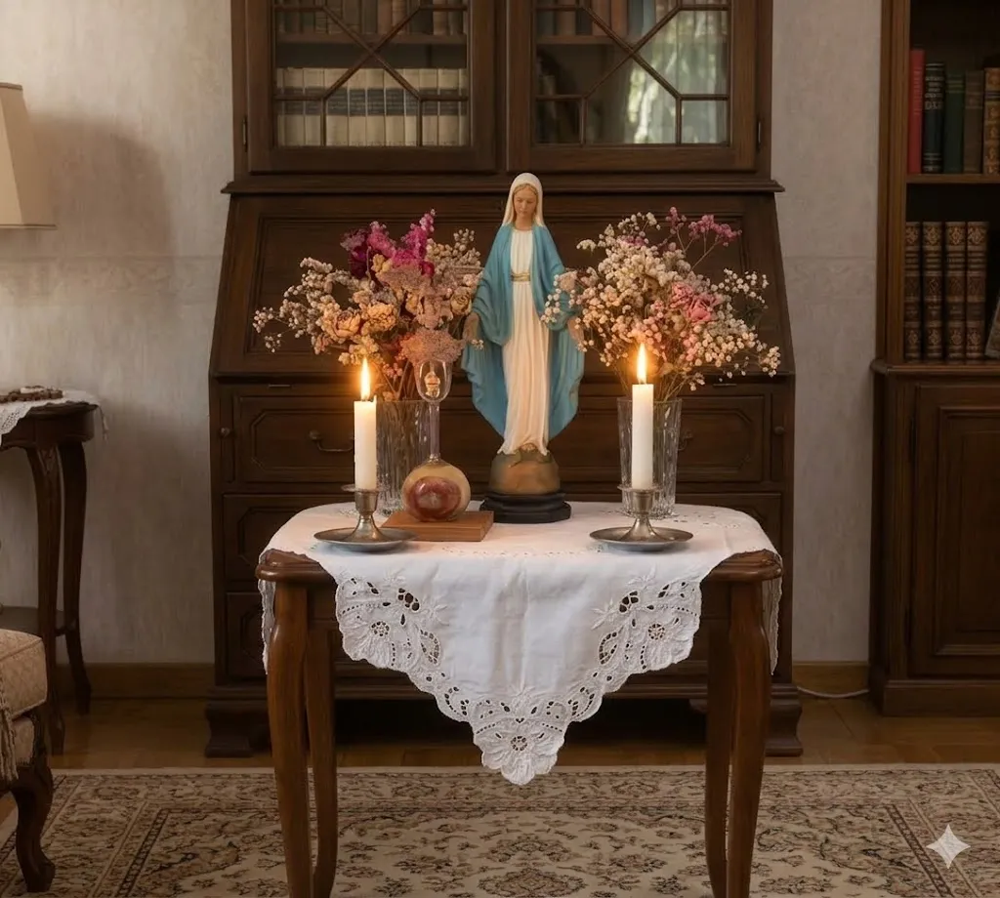
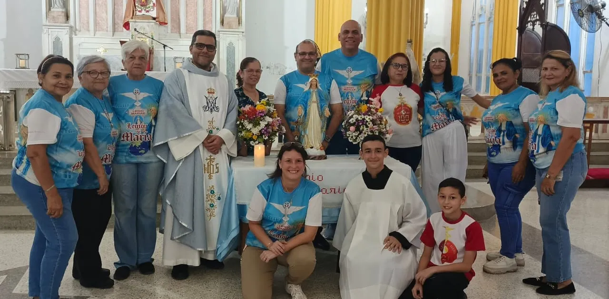
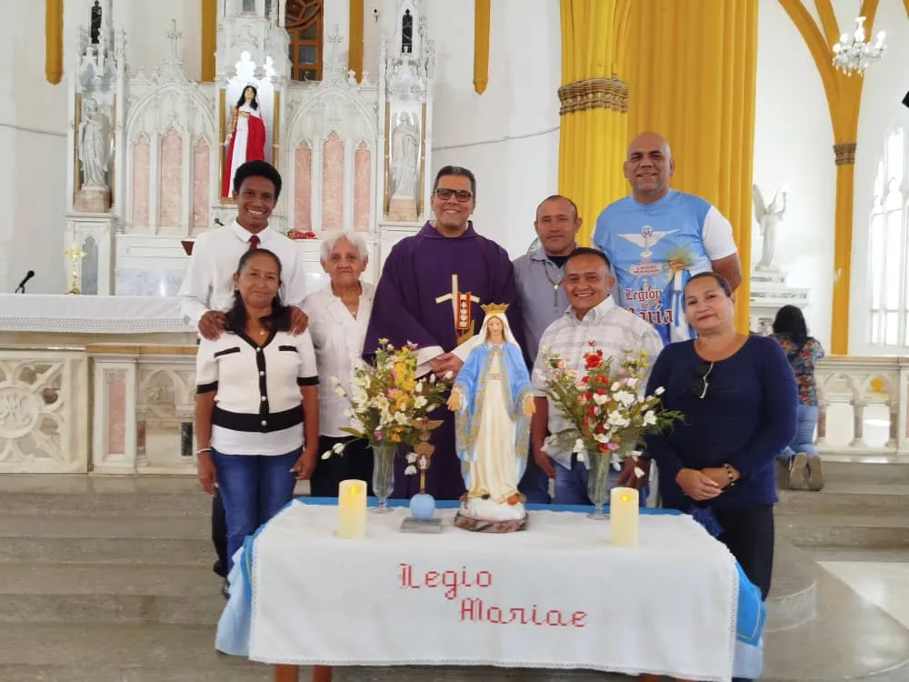
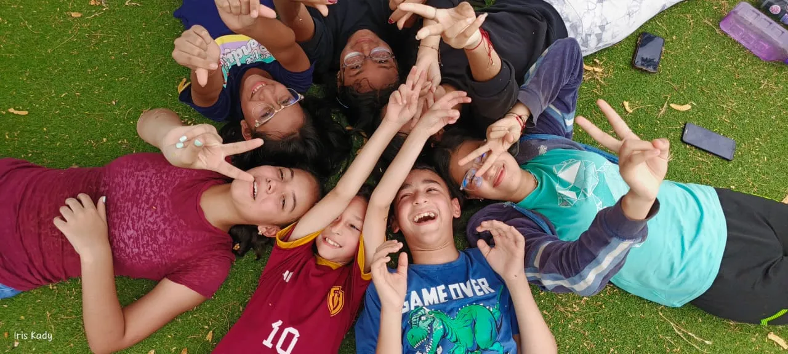

"¿Quién es ésta que surge como la aurora, bella como la luna, brillante como el sol, temible como un ejército en orden de batalla?" (Cantar de los Cantares 6, 10)
La Legión de María es una asociación apostólica de laicos que, bajo el liderazgo amoroso de nuestra Madre la Virgen María, se pone al servicio de la Iglesia en su lucha perpetua contra el mal y en su misión de llevar a Cristo al mundo.
Con un espíritu de profunda humildad, obediencia y valentía, los legionarios no solo se congregan a orar el Santo Rosario, sino que realizan un trabajo apostólico activo: visitan a los enfermos, acompañan a los ancianos, catequizan y llevan la presencia de María a todos los hogares de nuestra parroquia.

En nuestra parroquia contamos con tres grupos (Praesidia) que batallan con fe y amor.

Fieles entregados a la oración y a la visita constante de los más necesitados, llevando el consuelo maternal de la Virgen a quienes sufren física o espiritualmente.

Con devoción y constancia, este grupo se reúne para la santificación de sus miembros a través del rezo de la Tessera y el trabajo apostólico directo.

Praesidium Juvenil. El rostro joven de la Legión. Chicos y chicas que deciden entregar sus mejores años al servicio de Jesús por las manos de María.
Nuestra espiritualidad se basa en la "Verdadera Devoción a María" enseñada por San Luis María Grignion de Montfort. Nuestra arma es el Santo Rosario. Sabemos que no actuamos solos, sino unidos a nuestra Reina, repitiendo constantemente: "Soy todo tuyo, Reina mía y Madre mía, y cuanto tengo tuyo es."
Acércate a la reunión semanal del Praesidium que más se ajuste a tu horario.
Días: Martes
Hora: 7:00 PM
Días: Domingos
Hora: 11:00 AM
Días: Viernes
Hora: 5:30 PM
La Virgen María busca apóstoles dispuestos a llevar el amor de su Hijo a todos los rincones de nuestra parroquia. ¿Aceptas el llamado?
Quiero ser legionario →